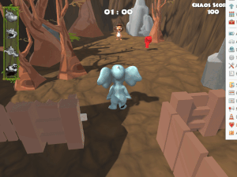
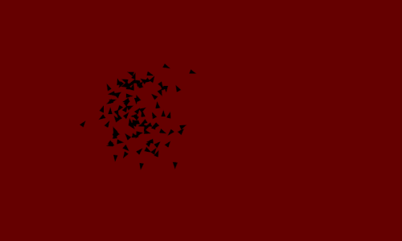
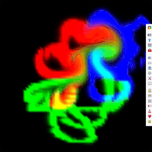
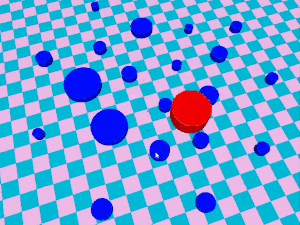
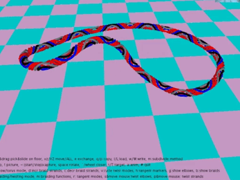
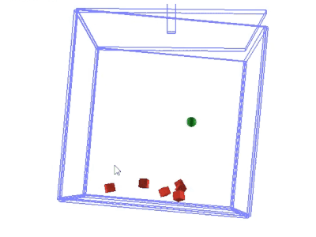
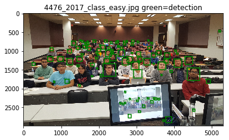

Made in Unity, this is a full fledged game.
You play as one of five animals to rescue your friends and escape the zoo.
You can shoot guards into outer space with rockets, lure them with donuts and make them diabetic
Or straight up punch them. I worked on the weapon mechanics and the AI.


Using Craig Reynold's ideas, simulation of a flock of 'boids'.This is a simulation of animal flocks, written in Processing
Using Craig Reynold's ideas, simulation of a flock of 'boids'.This is a simulation of animal flocks, written in Processing

Simulation of a fluid, using the technique described by Jos Stam in his paper 'Stable Fluids'

The red cylinder maintains its volume while being stuck to atleast two cylinders. It forms an Apollonius Circle when it comes in contact with three cylinders.

Calculation of pretwist in a looped tube and then generation of braids using the same. Different braids can be generated based on the pattern selected.

Simulation of collision handling in rigid bodies. Based on the DART library

Various projects in Computer Vision. Starting with a SIFT feature point detector and matcher, face detection, to scene recognition using AlexNet